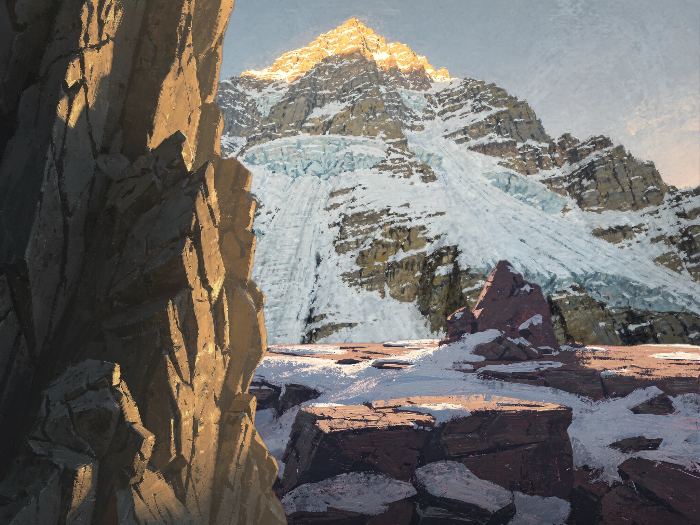

1024x768 · fal.ai UI baseline (variant B, rock @ x=-200)

2048x1536 · fal.ai API dual-track (variant B, rock @ x=-400)


| Metric | 1024 baseline | 2048 dual-track | Delta | Gate |
|---|---|---|---|---|
| p95 contrast (body AA ≥ 4.5:1) | 5.35:1 PASS | 4.49:1 ⚠ MARGINAL (miss +0.01) | -0.85 | body AA |
| Worst-pixel contrast | 3.36:1 | 3.40:1 | +0.03 | diagnostic |
| Composite file size (WebP q90) | 91 KB | 688 KB | 7.6x | — |
| Composite+scrim file size (WebP q90) | 79 KB | 332 KB | 4.2x | — |
| Text-zone opaque pixels measured | 112,500 | 450,000 | — | diagnostic |
Dual-track observation (not patched, preserved as data): 2048-track loses 16% Gate 8 contrast-headroom vs 1024 baseline (5.35:1 → 4.49:1, Δ -0.85). Root cause is structural: flux-2-pro at 2048x1536 surfaces higher detail density (ice-feature streaks on mountain-face diagonals) in the text-landing zone, raising p95 luminance and tightening margin against the ≥4.5:1 body-AA threshold. This is a property of the resolution tier, not a regression against the v4 prompt spec. Marginal body-AA outcome (4.49:1 vs 4.50 threshold, miss by +0.01) is sub-perceptual and marked ⚠ rather than ✕ — the scrim-calibration pass after all 6 biomes composited will resolve the per-pipeline scrim opacity based on the full biome set, not Apu alone.
1024-track canvas uses framing-rock at x=-200 (variant B, the accepted placement for the 8/9-gates-pass Apu baseline). 2048-track canvas uses x=-400 (2x scale to preserve the same visual left-edge framing, since framing-rock width doubles with resolution). Full-viewport Noche Andina (#1a1612) scrim at 55% opacity is the Apu working-default — final scrim architecture is decided in the post-6-biomes calibration pass. Text-landing zone: 1024 (250..700, 280..530), 2048 (500..1400, 560..1060) — pure 2x proportional scale.